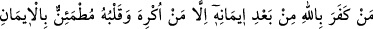
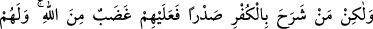
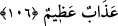

te’sir etmediğini bilmektedir.
Aristoteles der ki: “Konuşanın dilsize üstünlüğü konuşması iledir. Konuşmanın
güzelliği de doğru oluşundadır. Dilsiz ve susan kişi yalan söyleyenden daha hayırlıdır.”
Hayvanlar konuşmaz, konuşan insandır
Kötü söz söylersen hayvanlardan betersin
‘Helak yalanda, kurtuluş doğruluktadır.’ demişlerdir.
Haccac bir gün hutbe îrâd etti ve hutbeyi uzattı. Bir adam kalktı ve: “Namaz! Namaz!
Vakit geçiyor, seni beklemez, ey Habeş emîri!” dedi. Adamın kendi kavmi Haccâc’a:
“Ona bakma, delidir.” dediler. Haccac: “Eğer kendisi deli olduğunu kabul ederse
tamam.” dedi. Adama durumu sorulunca şöyle dedi: “Allah bana afiyet vermişken
‘Allah beni mübtela kıldı.’ demekten Allah’a sığınırım.” Bu söz Haccâc’a ulaşınca,
doğru söylediğinden dolayı onu affetti. Böylece doğru sözlülüğü kurtuluşunun sebebi
oldu. Allah’ım bizi sâdıklardan kıl.
106. Kim iman ettikten sonra Allah’ı inkâr ederse -kalbi iman ile dolu olduğu
halde (inkâra) zorlanan başka- fakat kim kalbini kâfirliğe açarsa, işte Allah’ın
gazabı bunlaradır; onlar için büyük bir azap vardır.
İbn Hatal, Tu‘me, Mıkyes ve benzerleri gibi “kim” Allah Teâlâ’ya “iman ettikten
sonra Allah’ı inkâr ederse” küfrü gerektirecek söz söylerse…
“-kalbi iman ile dolu olduğu” îtikadı değişmediği “halde” diliyle inkâra “zorlanan
başka-” Ancak canın ya da azalarından birinin yok edilmesinden korkarak küfür
kelimesini zorla telaffuz eden kimse müstesna. Bu ifâdede Allah katında muteber olan
ve insanı kurtaran imanın kalp ile tasdik olduğuna delil vardır.
Buradaki istisnâ, Allah’ın gazab ve azab hükmünden muttasıl (istisnâ edilenin istisnâ
edildiğinin cinsinden olduğu) bir istisnadır. Çünkü küfür, lügat yönünden iman gibi hem
söze hem de îtikada şamildir. Buna göre mana: “Fakat zorlama ile inkâr eden kimse
müstesna.” şeklinde olur. İstisnânın munkatı (istisnâ edilenin istisnâ edildiğinin
cinsinden olmadığı) bir istisnâ olduğu da söylenmiştir. Çünkü küfür bir îtikaddır.
Zorlama ise îtikad konusunda değil söyleme konusundadır. Buna göre mana: “Fakat
diliyle küfre zorlanan kimse müstesna.” şeklinde olur.
“fakat kim” böyle değil de “kalbini kâfirliğe açarsa,” yani küfre îtikad edip nefsi